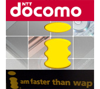

Advertisements
Copyright © tutorialspoint.com
|  |
NTT DoCoMo's i-mode is a mobile internet service popular in Japan. i-Mode was invented by a team led by Mari Matsunaga in February 1999 at NTT DoCoMo. This tutorial gives a basic understanding on i-Mode. If you are willing to help : Make A Donation |
A collection of GSM related Sites and Books is given at this page.
A list of useful GSM acronyms sorted in alphabetical order.
NOTE:GSM™ and GSM Logo are registered and owned by the GSM Association.
Copyright © tutorialspoint.com